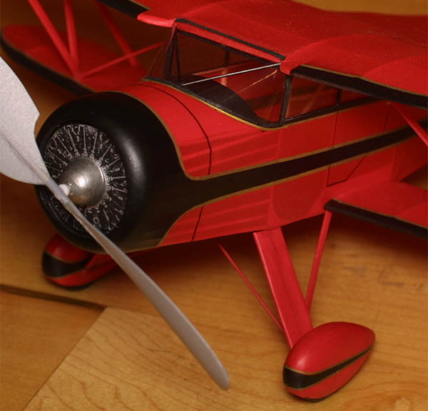

September 16, 2002
A Visit with Jiro Sugimoto
Long time fans of Bill Hannan's wonderful publications have been treated to endless photos of delightful stick and tissue models over the years. Among the finest have been those built by Jiro Sugimoto of Japan. Mr. Sugimoto is a meticulous craftsman with an uncompromising eye, and a very steady hand. | |

| |
|---|---|
was weighed with the CO2 motor on board, but it has also never known an airbrush. And now to his models ... | |
1938 Watkinson Dingbat PrototypeA rare English Ultralight from before WWII
| |
Farman Moustique
The detailing on the Moustique impresses the viewer with a strong sense of realism. | |
|
The motor appears to be built up of balsa, tubing and other bits. I believe the pilot is carved foam, with wire framed goggles.
The "wire" rigging on the Moustique tail surfaces is thread, stiffened with white glue. The control horns were cardstock or 1/64" ply. | |
|
Waco SRE | |
| This exceptional Peanut Scale Waco SRE weighs a scant 7.9 grams. The model is airbrushed red and black, with gold trim added as painted tissue strips adhered with 3M-77. | |
|  | |
| The Waco SRE circling just under a 26 foot ceiling. 600 turns were good for 45 seconds or so.
The longest flight to date has been 115 seconds on 1700 turns. That's (nearly) 2 minutes, with a highly detailed peanut, indoors. | |
|
Waterman Gosling Racer | |
 Despite drag from the large fuselage, radiator and struts, the Waterman just floats through the air.
Despite drag from the large fuselage, radiator and struts, the Waterman just floats through the air.
I would like to think that the wheels had something to do with the success of this model. I know better, however, and am honored by their presence. Thank you for visiting us, Sugimoto-san, however briefly. Your inspiration will be long lasting. | |
return to
Copyright 2002, Thayer Syme. All rights reserved